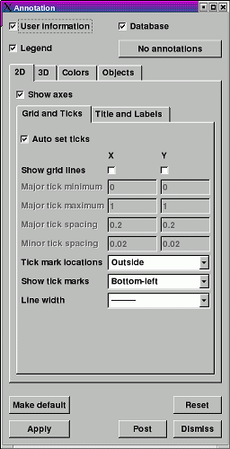

The Annotation Window (see figure) contains controls for the various annotations that can appear in a visualization window. You can open the window choosing the Annotation option from the Main Window's Controls menu. The Annotation Window has a tabbed interface which allows the three basic categories of annotations to be grouped together. The first tab lets you control the 2D annotation options. The second tab lets you control the 3D annotation options. The third tab lets you control the colors used for annotations and the visualization window. Finally, the fourth tab lets you create arbitrary numbers of annotation objects such as 2D text annotations or time slider annotations.
|  |
| Figure 1 |